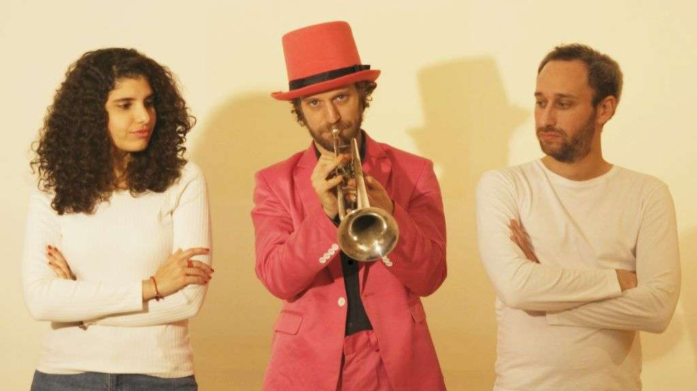

When love speaks softly, Circanium listens

The following feature is now included in our online magazine which is also available in print.
Issue #10
Online Magazine | Print Magazine“Ballade de l’anamour” arrives like a quiet confession passed across a small table on a late night, when the world has settled and all that’s left are the things that matter. It’s a French song, a true French song, not because it emulates the style of the past, but because it understands the value of the past. Two voices, a guitar, a trumpet, and nothing else. Circanium knows the value of restraint over volume.
The song is deeply romantic, unapologetically so, without ever being sweet. There’s a level of melancholy here, the kind that sits lightly on the shoulder rather than weighing heavily on the heart. The guitar sets the tone, warm and intimate, and the trumpet runs the course of the song like a second narrator. It’s almost like the instruments are answering the voices rather than playing with them.
Circanium’s influences are evident, but never obvious. The Brassens influence can be seen in the use and care given to the words. Piaf can be felt in the commitment to the emotions, the feeling that the words are personally meaningful. Goldman can be heard in the clarity of the melody, and the influences of Les Ogres de Barback and Debout sur le zinc can be felt throughout the human scale and the communal feel. There’s a strong jazz feel here, the timing and the trumpet playing are jazzy, the breathing and expanding and contracting without losing the center.
What gives *Ballade de l’anamour* its unique tone is the band’s connection to performance and circus arts. It’s present in the rhythm. It’s music that’s connected to stages, to bodies moving through space, to moments that require attention rather than spectacle. It’s a song that feels like a small theatrical piece or like a late scene from a French film where dialogue gives way to music because words are no longer enough.
The dual vocals are also important. They don’t fight each other or complement each other too well. They have a subtle tension that feels like two inner worlds brushing up against each other. They blend together and then drift apart, which feels like an extension of the idea of love as both shared and singular. It feels like something from French chanson history, but also something from more modern French music, like moments from artists like Pomme and Clara Yse, where there’s a quiet intimacy to the work.
The production work on the song is simple and for a reason. Every element feels like it’s there for a purpose. The trumpet does not outstay its welcome. The guitar does not embellish. It gives space for the words to land, even if you don’t fully understand them. Emotions can be just as powerful as words here.
Ballade de l'anamour is part of a tradition of music that prioritizes presence over production sheen. If you're a fan of music that sounds designed to be consumed in a single sitting, with the lights turned low, then this will likely be up your alley. If you're a fan of movies such as "Les Parapluies de Cherbourg" or the quieter scenes from "Le Fabuleux Destin d'Amélie Poulain," you'll know this feeling right away.
You can feel that nothing is theoretical with Circanium’s music. It is all experience-based. And that is why the song seems to linger after it is over. It is not a song that tries to craft a hook that will stay with you after it is over. It is a song that settles in a different way, a way that is closer to memory.
In a world filled with music that is built for speed and distraction, Ballade de l’anamour is a song that asks you to take a different pace. It asks you to pay attention, to remember that romance is a delicate and poetic concept that is often unresolved. Circanium understands this is a rare and precious space and approaches it with a sense of respect.
This dispatch was last updated on February 16, 2026